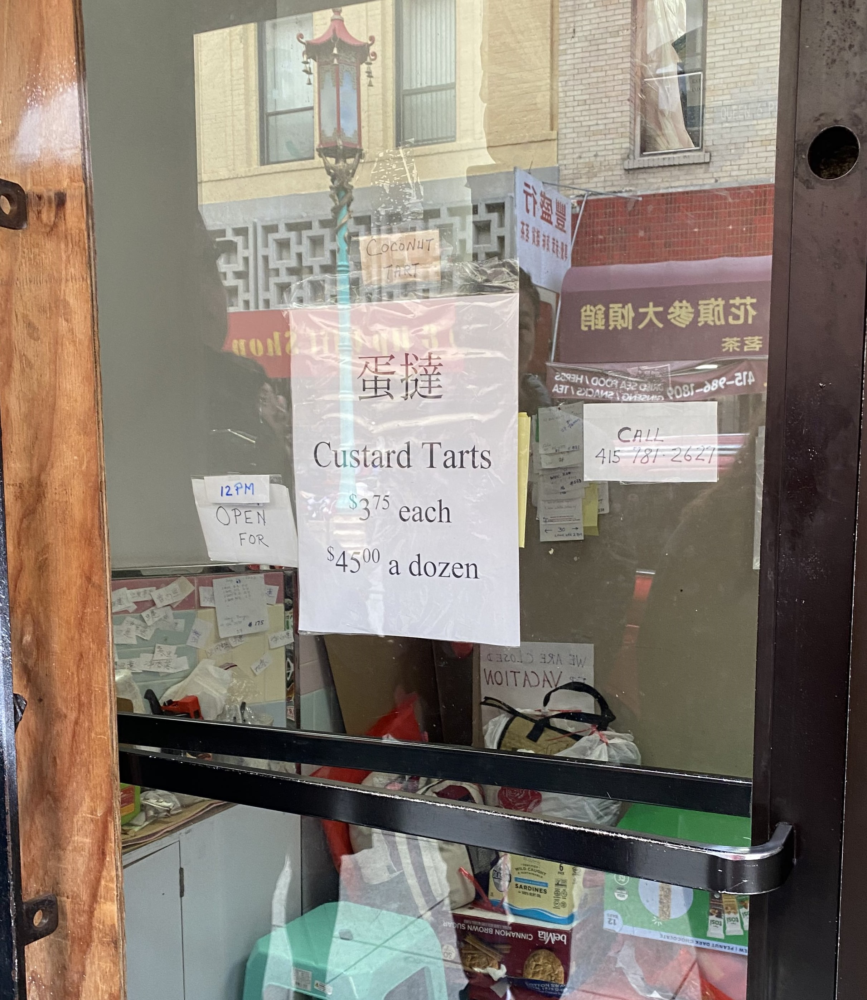
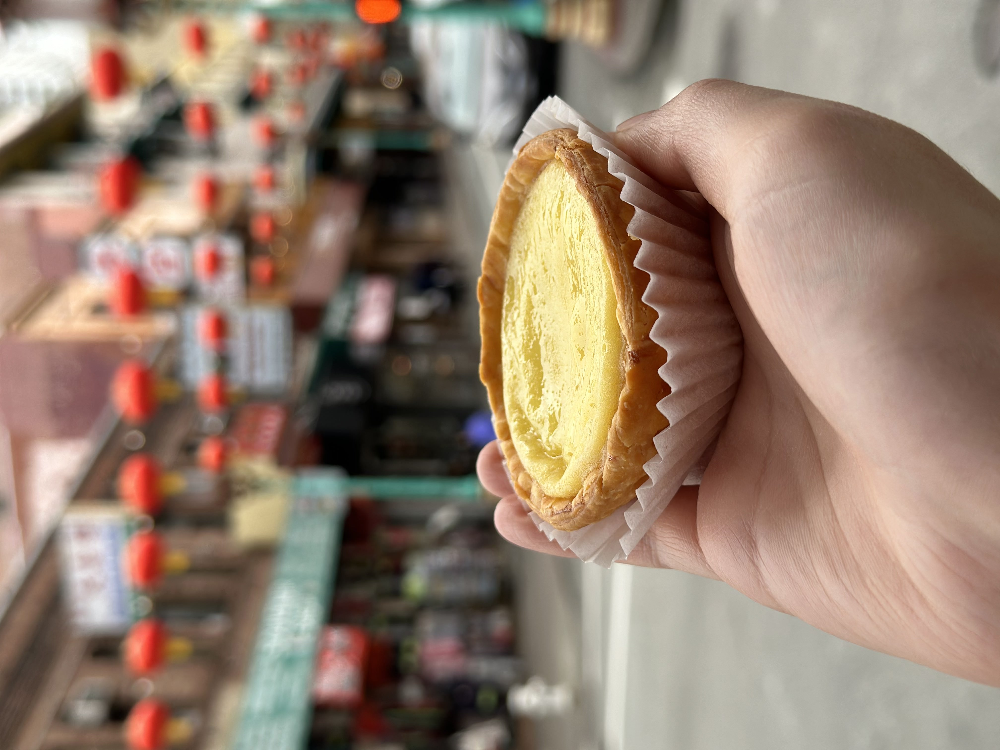

It’s a sunny afternoon in San Francisco, and a long line of customers snakes down Grant Street in Chinatown. To the untrained eye, it appears as if a crowd is gathered around an abandoned, gated store in the middle of the block. The patrons in line, however, patiently wait for the treasures behind the gated windows: Golden Gate Bakery’s egg tarts.

The Golden Gate Bakery, located in the heart of San Francisco’s Chinatown, opened its doors in 1975 and has been serving the community ever since. Although the bakery once sold buns, cakes and other goods, it now almost exclusively serves egg tarts—with the occasional coconut tarts or mooncakes.
On a good day, patrons can have their egg tarts in hand within half an hour, but on busy days like weekends, the wait can take over three hours.

Virginia Woo, who has been working at the bakery since the 1990s, said on an average day, the bakery sells a little more than 1,000 egg tarts. Though Woo herself doesn’t bake anything, she facilitates the store’s sales and exchanges pastries for cash— one egg tart for $3.75 or a dozen for $45, almost double the price of egg tarts at other bakeries in Chinatown. At the bakery, it’s not uncommon for customers to order three or four dozen tarts at a time. According to Woo, one of the largest orders placed at Golden Gate consisted of 125 dozen egg tarts.
“For the price point and the wait and the inconsistency of opening, it isn’t close to worth $3.75 each.”
“It’s not that good for how much they charge. Long lines. Not worth it. They are famous for being famous.”
“Maybe their crust stands out but it's definitely not worth the long wait and price. People love what's hard to get.”
On Google Reviews, the bakery has racked up over 1,100 reviews with an average rating of 4.2 stars.
While some reviews rave about the freshness, taste and texture of Golden Gate Bakery’s egg tarts, comments are also rife with complaints about the long lines, inconsistent hours and steep prices.

Though Google shows that the bakery is open from 8 a.m. to 8 p.m. from Sunday through Friday, longtime fans of the bakery—and tourists—know better. According to Woo, the bakery is usually open from noon to 6 p.m. and operates strictly at the discretion of the bakers.
This means the bakery is closed for at least two days per week, and because the closure days vary from week to week, it is often difficult for customers to know when the bakery is open.
This inconsistency in the bakery’s operating hours has led to the creation of a Facebook page aptly named “Is the Golden Gate Bakery Open Today?” which posts updates on whether the bakery is open or closed on any given day.
The administrator of the page first posted on July 2, 2012, and since then, the page has garnered 4,900 likes and 5,800 followers.



Denis Kwok, who is a follower of the page, said he grew up eating pastries from Golden Gate Bakery and has fond memories of visiting it with his family back when he lived in the Sunset District in San Francisco.
Though he now lives in Los Angeles, Kwok said he and many of his friends were worried that the bakery would close permanently during the COVID-19 pandemic, so he is thankful it is still around to this day. During the COVID-19 pandemic, data from San Francisco’s Chamber of Commerce showed that 48% of the city’s small businesses were closed as of June 2021. Golden Gate Bakery closed its doors during the height of the pandemic but has been more consistently open since late 2023.
“There are a lot of businesses that just don't survive so long, but (Golden Gate Bakery) has kind of been a constant,” Kwok said. “It's kind of like a symbol of San Francisco, definitely in the Chinese community.”
Fans of the bakery such as Kwok are more than willing to shell out nearly $4 for each pastry and wait in line for them. For him, the egg tarts from the bakery carry a sense of comfort that has been nearly impossible to find elsewhere, even in other cities like Los Angeles.

“Nowhere else have I found anything similar,” Kwok said. “I actually don't mind having to wait, and if anything, I think a lot can be said when sometimes you have to go through a little bit of a challenge or struggle to get something good. That just makes it that much more special.”
In addition to the nostalgia factor of the egg tarts, Kwok described their taste and quality as second to none.
While the crust of the egg tart is comparable to a puff pastry, the custard itself, which is made with lard, is silggly aky, jind lightly sweet.
“I love the amount of custard that's within the tart,” Kwok said. “It's more than any other place I've ever really been. Also, their crust is different. It’s similar to a croissant, buttery and layered, and it's really nice and flaky. Most of the time, when you leave the store, (the egg tarts) are still piping hot.”

Despite the drawbacks of the bakery’s inconsistent operation and pricing, locals in the city have also attributed increased foot traffic and tourism in Chinatown to its presence. Edwin Lee, who grew up in Chinatown and now lives in the Sunset District, said the intrigue and curiosity surrounding the bakery has helped keep the community alive.
According to Lee, Golden Gate Bakery has always been well-known, but it wasn’t until the 2000s that it catapulted in popularity and became a tourist hotspot, which in turn led to increased prices. Lee said the line at the bakery often comprises several visitors from outside of SF.
“If you don't live here, then it's probably going to be something you would want to be looking forward to, like this is one of the things I need to do when I come to SF,” Lee said. “It's become more of a tourist thing where it's kind of like, you have to go see the Golden Gate Bridge, or you have to ride a cable car.”
For Lee and Kwok, the bakery is more than just a place to buy egg tarts—it’s a representation of Chinatown’s resilience and a reminder of how nostalgic desserts from their childhood have continued to permeate San Francisco over the decades.
>
“It’s always been a popular bakery,” Lee said. “What they've done for Chinatown, I think it's really good because I would really hate to see Chinatown go away.”